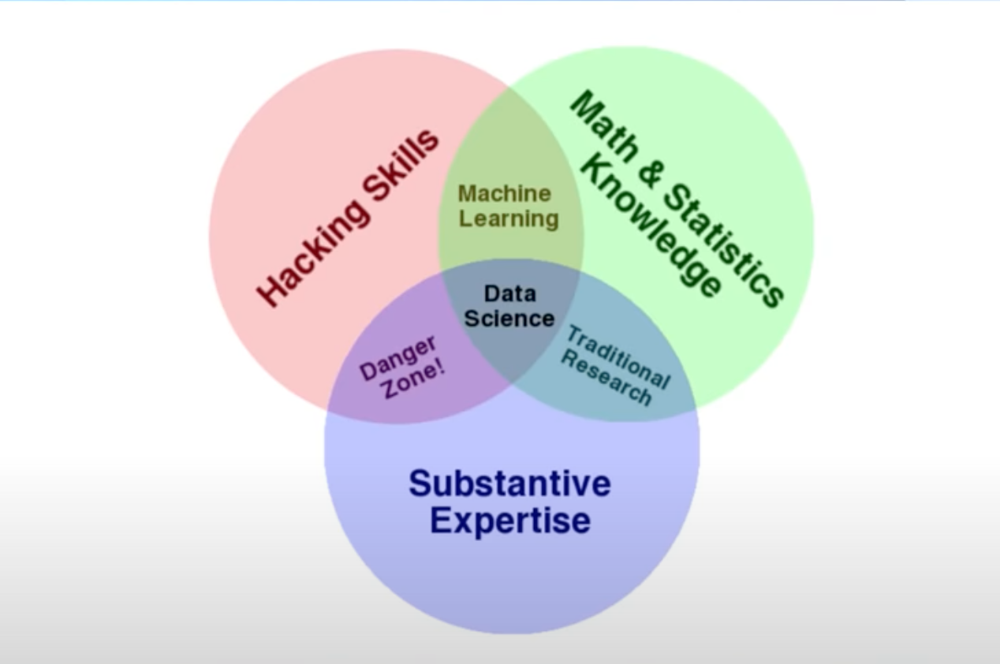

Hello, this page is where i'll be documenting my journey on learning the science of Data from scatch!
Everything you need to learn Data Science for free [NOTES]
What is a data science?
Know how to code
understand maths and algorithms
use these skills to gain insight from data
Using the insights to make predictions and draw inferences

Other imp things data scientist need to know:
Ask the right questions for their data
how to do great data visualizations
how to clean their data
how to communicate thier findings about the data to non-data-scientists
Pathway
Python Basics
Maths, Linear Algebra & Calulus
Practise python projects
More python
data exploration and visualization
Kaggle tutorials
Probability and statistics
Statistical learning
Python + Data Science + probability and statistics
Data structures and algorithms
Tensor Flow
SQL
GIT and Version Control
R
Books
How to think like a computer scientist
4 hour laser-focus everyday in 6 months = Data Scientist
1. EXCEL
Data filters, funtions
Formulas
Charts and plots
Pivot Tables, tranpose
Vlookup
VBA Macros
2. Statistics & Probability MartinStatsLectures, StatQuest with Josh Stramer
Mean, Median, Normal DIstribution, standard deviation, mode, variance, range, IQR, correlation
Probability, conditional proability, priors, posteriors, maximum likelihood
Descriptive statistics, inferential statistics, regression, hypothesis testing, A/B testing
3. week 3-4 Programming: Python (code basics Python 3 Programming playlist 16 videos)
4. Week 5-8 (1 month) Visualization Library (data cleaning and exploration)
numpy
pandas
data visualization (matplotlib)
**Data scientists spend 70% of their time in doing data cleaning and exploration**
5. week 9-10-11-12 Machine Learning
New maths and statistcs
6. (1 month) Deep Learning
Artifical Neural Networks
Convulational neural nets
recurrent neural networks
7. week 17,18,19,20 SQL & MongoDB (khan academy SQL)
SQL
8. week 21-22-23-24 BI Tools
tableau
Powrer BI (Project)
Qlik Sense